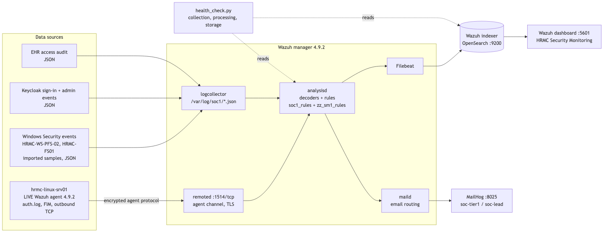
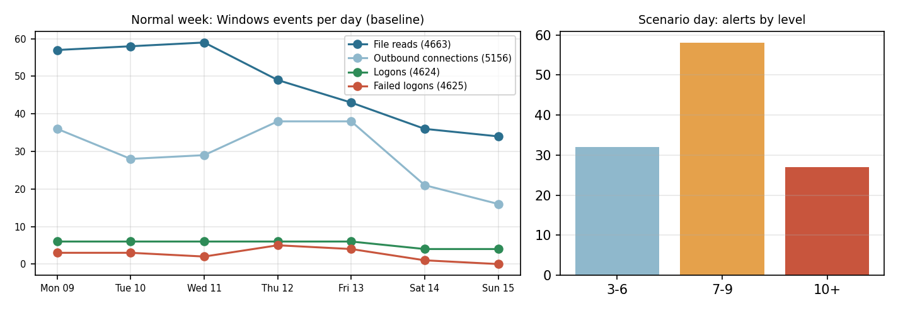

| Prepared by: | Akhila Chennamaneni, IAM & GRC Analyst (author) |
| Organization: | HealthLine Regional Medical Center (HRMC), Care Access Navigator (CAN) capstone |
| Course: | Security Monitoring 1 (DAE 6-Month Cybersecurity, Cohort 2) |
| Rubric criterion: | Criterion 3: Monitoring Implementation |
| Environment: | Wazuh 4.9.2; live Linux agent hrmc-linux-srv01; Windows Security samples (option B, instructor-approved); capstone Keycloak and EHR logs |
| Date: | November 18, 2026 |
"sample": "imported-synthetic". The Linux source is live: a Debian 12 server (hrmc-linux-srv01) runs the official Wazuh agent 4.9.2,
connected to the manager over the agent protocol (port 1514/tcp), and its SSH, file and network activity in this report is real.
| Data source | Integration | Evidence |
|---|---|---|
| Linux server (live agent) | Agent enrollment to wazuh.manager:1515, events on 1514/tcp | Agent 001 Active; alerts 5760, 5763, 40112, 553, 554, 100630 |
| Windows Security (imported samples) | JSON file + localfile log_format json | 637 baseline events + scenario; rules 100600-100651 fire |
| Keycloak sign-in events | JSON file (capstone export) | data.src keycloak_login alerts |
| EHR access audit | JSON file (capstone export) | data.src ehr_access alerts, 100521 / 100650 |
| Keycloak admin events | JSON file (capstone export) | data.src keycloak_admin alerts (SOC 1) |
docker compose up -d./wazuh-config-mount/etc/rules/ (soc1_rules.xml, zz_sm1_rules.xml) and log sources as <localfile> entries in ossec.conf.email_notification yes, smtp_server mailhog, email_alert_level 10, plus an email_alerts block for level 12 to the SOC lead.lab/Dockerfile.linux-agent): Wazuh apt repository, WAZUH_MANAGER=wazuh.manager apt-get install wazuh-agent=4.9.2-1, extra config for auth.log, FIM and outbound TCP.scenario/windows_events.py history; test each rule with wazuh-logtest before relying on it.lab/build_dashboard.py, saved-objects API) and schedule lab/health_check.py.| File | Purpose |
|---|---|
wazuh_config/zz_sm1_rules.xml (repo: sm1_rules.xml) | 15 Security Monitoring rules |
lab/agent_ossec_extra.conf | Agent: auth.log, FIM, outbound_tcp command, no auto-restart |
lab/Dockerfile.linux-agent, lab/entrypoint.sh | Linux server image with the agent |
wazuh_config/hrmc_security_dashboard.ndjson | Dashboard saved objects |
SOC 1: wazuh_config/ossec_soc1_excerpt.conf, soc1_rules.xml | Email settings, log sources, application rules |
| Metric | Basis | Mean | Std dev | P95 | Max | Alert threshold |
|---|---|---|---|---|---|---|
| Windows logons per working hour | 7-day sample, 60 working hours | 0.5 | 0.87 | 2 | 2 | 3.1 |
| Windows failed logons per working hour | 7-day sample, 60 working hours | 0.28 | 0.66 | 2 | 3 | 4 |
| File reads per working hour | 7-day sample, 60 working hours | 4.43 | 4.95 | 12 | 18 | 19.3 |
| Outbound connections per working hour | 7-day sample, 60 working hours | 2.82 | 3.78 | 10 | 14 | 15 |
| Failed logons per user per day | 7 days x 6 users | 0.43 | 0.66 | 2 | 2 | 6 |
| File reads per user per active minute | 7 days, 336 user-minutes with reads | 1 | 0.0 | 1 | 1 | 20 in 60 s (rule 100612) |
| Keycloak failed sign-ins per active day | capstone log, 3 active days | 21 | 28.3 | n/a (too few days) | 61 | 5 per user in 2 min (rule 100502) |
Thresholds are set above normal: at least mean + 3 standard deviations and above the highest value seen in the normal week, rounded to a number the rule can use. The scenario was far beyond them (7 failures in 18 s, 30 reads in 30 s), while the normal week stayed below every threshold (0 high alerts). Processing baseline: 0 events dropped, analysisd queues at 0%, median 1.5 s (max 2.8 s) from event to alert.

lab/health_check.py runs every 15 minutes (cron / launchd) and checks collection status (agents, services, log files, last alert per source),
processing performance (events decoded and dropped, queue usage, remoted discards) and storage utilization (index health and size, indexer disk, host disk, manager queue folder).
Exit code 0 = OK, 1 = warning, 2 = critical; results go to outputs/health_check_*.json.
| Area | Check | Value | Status | Threshold |
|---|---|---|---|---|
| Collection | Agent wazuh.manager (server) | Active/Local | OK | Active |
| Collection | Agent hrmc-linux-srv01 | Active | OK | Active |
| Collection | Service wazuh-analysisd | running | OK | running |
| Collection | Service wazuh-remoted | running | OK | running |
| Collection | Service wazuh-logcollector | running | OK | running |
| Collection | Service wazuh-syscheckd | running | OK | running |
| Collection | Service wazuh-maild | running | OK | running |
| Collection | Service wazuh-db | running | OK | running |
| Collection | Service wazuh-modulesd | running | OK | running |
| Collection | Log file ehr_access.json | 6 events since start | OK | file monitored |
| Collection | Log file windows_security.json | 39 events since start | OK | file monitored |
| Collection | Log file auth.log | 0 events since start | OK | file monitored |
| Collection | Log file keycloak_login.json | 1 events since start | OK | file monitored |
| Collection | Log file keycloak_admin.json | 0 events since start | OK | file monitored |
| Collection | Last alert from source windows_security | 2 min ago (715 alerts) | OK | <= 60 min (imported sources replay on demand) |
| Collection | Last alert from source keycloak_admin | 1318 min ago (231 alerts) | WARNING | <= 60 min (imported sources replay on demand) |
| Collection | Last alert from source keycloak_login | 2 min ago (201 alerts) | OK | <= 60 min (imported sources replay on demand) |
| Collection | Last alert from source ehr_access | 2 min ago (120 alerts) | OK | <= 60 min (imported sources replay on demand) |
| Collection | Last alert from agent wazuh.manager | 2 min ago (1713 alerts) | OK | <= 60 min (imported sources replay on demand) |
| Collection | Last alert from agent hrmc-linux-srv01 | 6 min ago (212 alerts) | OK | <= 60 min (imported sources replay on demand) |
| Processing | Events decoded (total since start) | 247 | OK | > 0 |
| Processing | Events per second (last interval) | 0.0 | OK | baseline in section 3.3 |
| Processing | Events dropped | 0 | OK | 0 |
| Processing | Highest analysisd queue usage | 0.0% | OK | < 70% |
| Processing | Alerts written | 48 | OK | > 0 |
| Processing | Agent messages discarded (remoted) | 0 | OK | 0 |
| Storage | Indexer cluster health | green | OK | green/yellow (single node) |
| Storage | Alert indices size | 3.6 MB, 1925 alerts in 2 daily indices | OK | trend tracked |
| Storage | Indexer data disk free | 82% (197.9 GB) | OK | > 15% |
| Storage | Host (Mac) disk free | 22.8 GB (9%) | WARNING | > 3 GB (vulnerability detector disabled after it filled the disk on 2026-11-18) |
| Storage | Manager queue folder | 13 MB | OK | < 1,000 MB |
Health-check procedure: OK → nothing; WARNING → Tier 1 checks within the shift (the two warnings above are explained: the Keycloak admin source only replays on demand; the Mac has 9% disk free); CRITICAL → SOC lead paged, monitoring gap recorded as an incident.
auto_restart disabled; next run OK.
(2) Earlier the host disk fell below 1 GB: Wazuh's vulnerability detector had downloaded 18.6 GB of feeds. It was disabled, the cache removed and the space returned;
the host-disk and manager-queue checks were added so this is caught early next time.